01
Self-awareness
Strengths Map
An exploration of my qualities, learning style, and strengths.
Hi, I’m Syler Bustarde—a computing student and creative learner building skills, confidence, and meaningful work one project at a time.
Explore my work Let’s connectA quick look at the person behind the portfolio and the strengths I bring to my growth journey.
I’m Syler Bustarde, a student interested in web design, technology, and creative communication. Through this course, I learned to reflect on my habits, manage challenges, and turn personal insights into practical goals.
I enjoy going to the gym, playing badminton, basketball, and table tennis, and traveling. These interests help me stay active, disciplined, curious, and open to new experiences.
Click any project to open its full view, explanation, and role in my self-development journey.
An exploration of my qualities, learning style, and strengths.
A focused gap analysis and action plan for my future direction.
A practical plan for prioritizing tasks and improving productivity.
A reflection on responding to conflict with more awareness.
A visual identity exercise showing my branding and contact details.
A visual introduction combining my interests and aspirations.
Full project view · self-awareness
This project helped me identify my personal qualities, learning preferences, and abilities. It gave me a clearer understanding of how my strengths can support my academic work, teamwork, and future career.
I learned that self-awareness is useful when making decisions and improving habits. Knowing my strengths also helped me recognize areas where I still need practice.
Back to worksFull project view · career direction
This project connects my current skills with my future professional direction through a gap analysis and specific SMART goals.
I learned how to turn a broad career dream into smaller, measurable actions and realistic professional goals.
Back to worksFull project view · personal growth
This plan focuses on prioritizing important issues, organizing tasks, and using practical habits to reduce stress and improve productivity.
Completing small tasks, taking breaks, and reflecting on challenges helped me feel more productive.
See progress evidenceFull project view · communication
This project explores how I respond to conflict and how I can communicate more calmly, listen better, and manage emotions.
I learned that conflict can be handled more positively when I pause, understand other perspectives, and focus on solving the issue.
See progress evidenceFull project view · brand identity
This branding project reimagines Yahoo with a friendly digital identity, the tagline “Make every moment matter,” and an orbit-inspired logo.
I learned how color, typography, layout, and symbols can communicate a brand personality.
View business cardFull project view · creative expression
This creative output introduces my personality, interests, strengths, and goals through a visual presentation.
I learned how to present myself more confidently and communicate who I am as a student, creator, and future professional.
Back to worksThis personal branding output uses a cream, purple, yellow, and orbit-inspired visual identity.
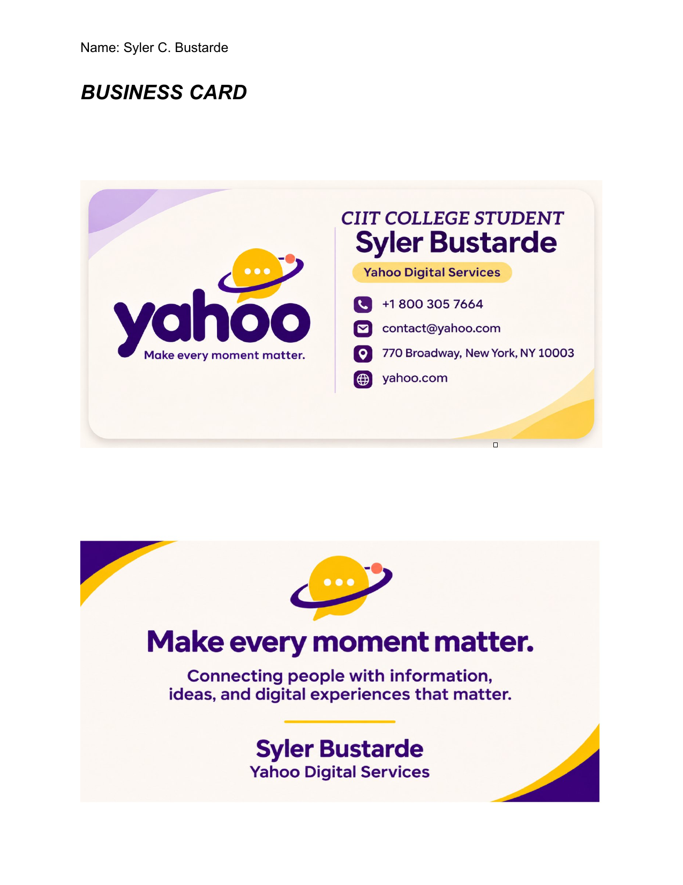
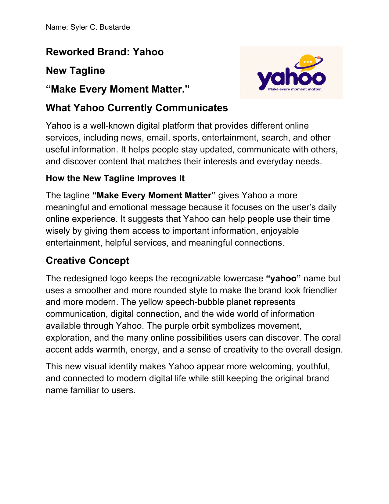
My two-week trackers document my habits, challenges, energy levels, and reflections.
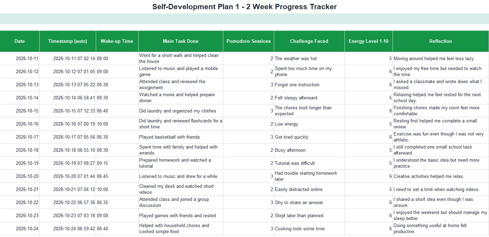
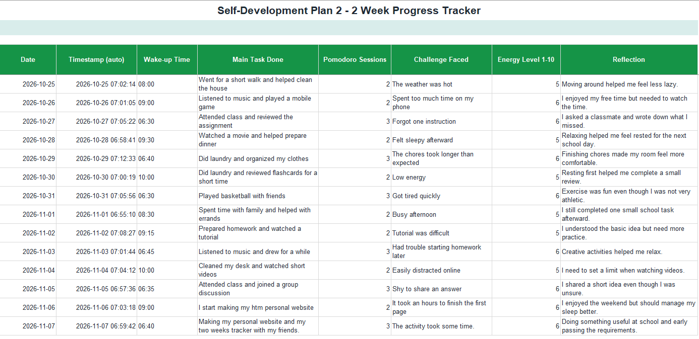
Click any picture to zoom it inside this website. Click it again to close the zoomed view.
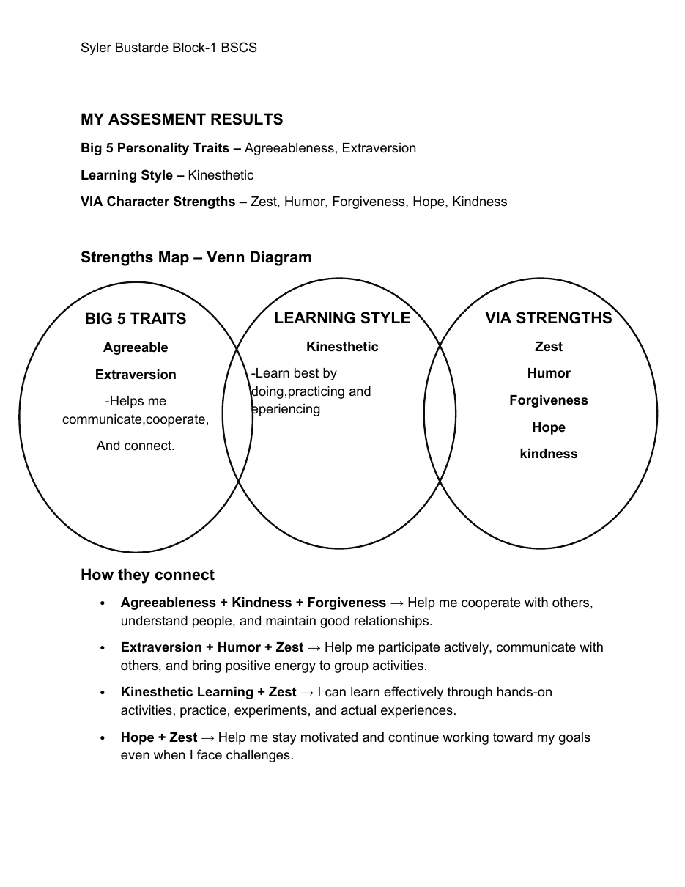
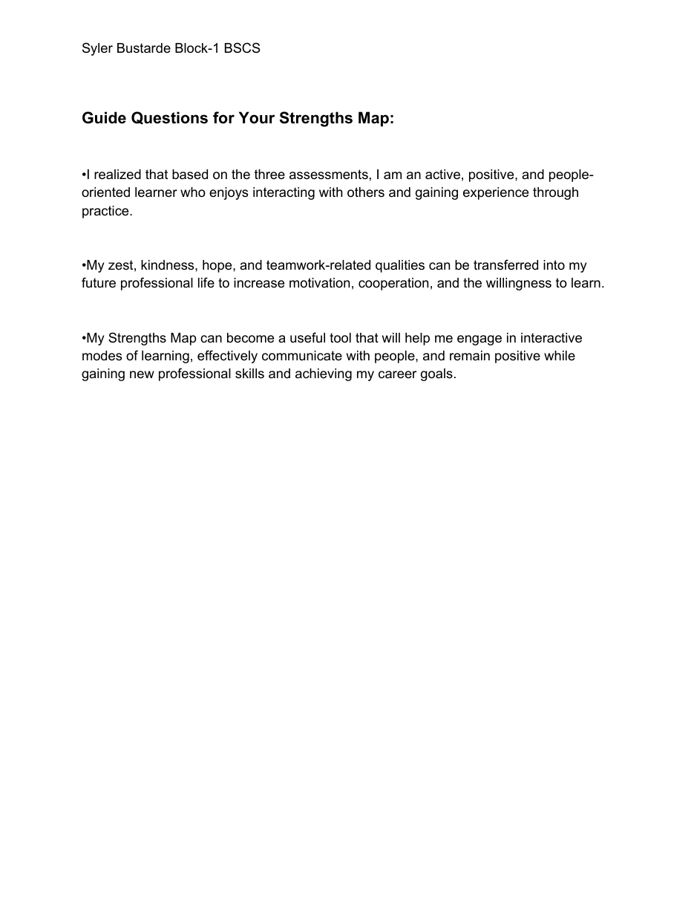
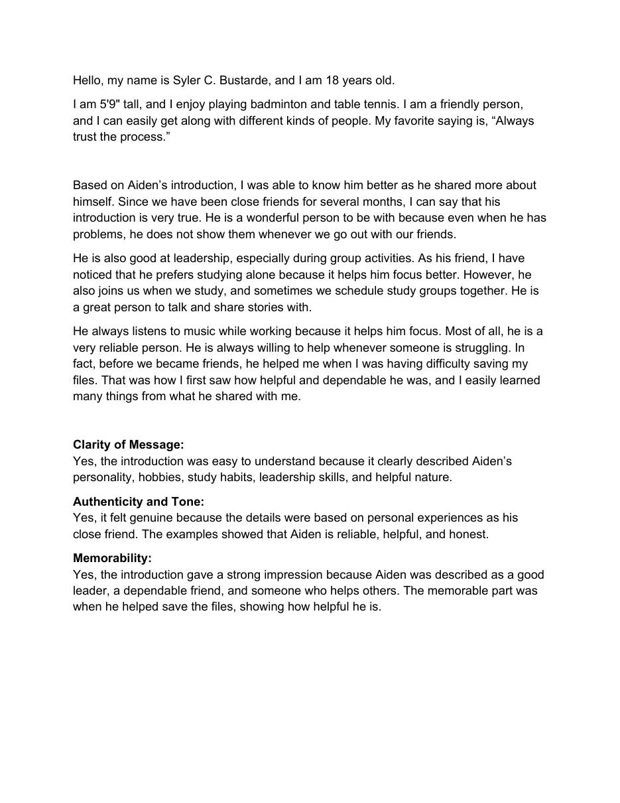
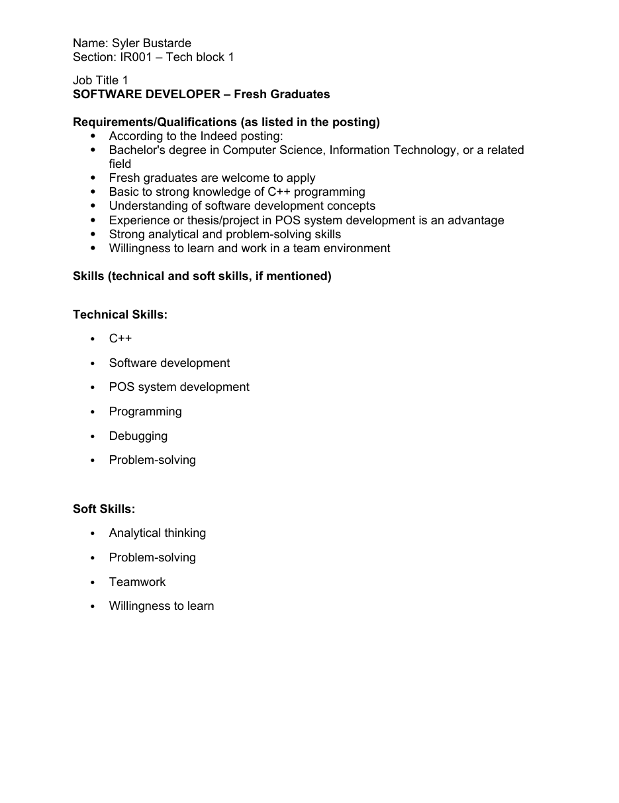
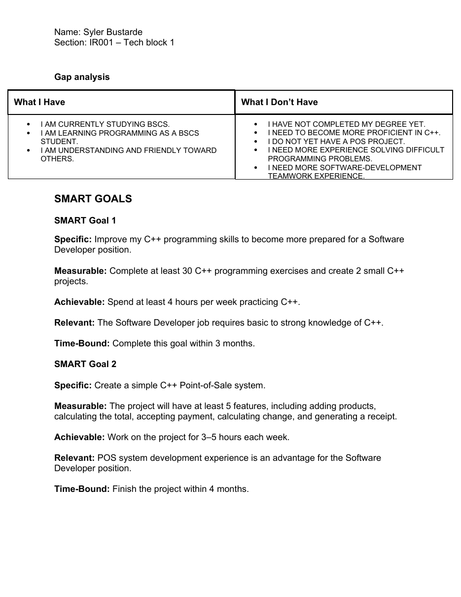
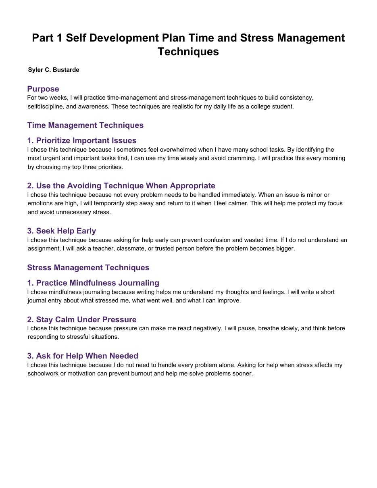
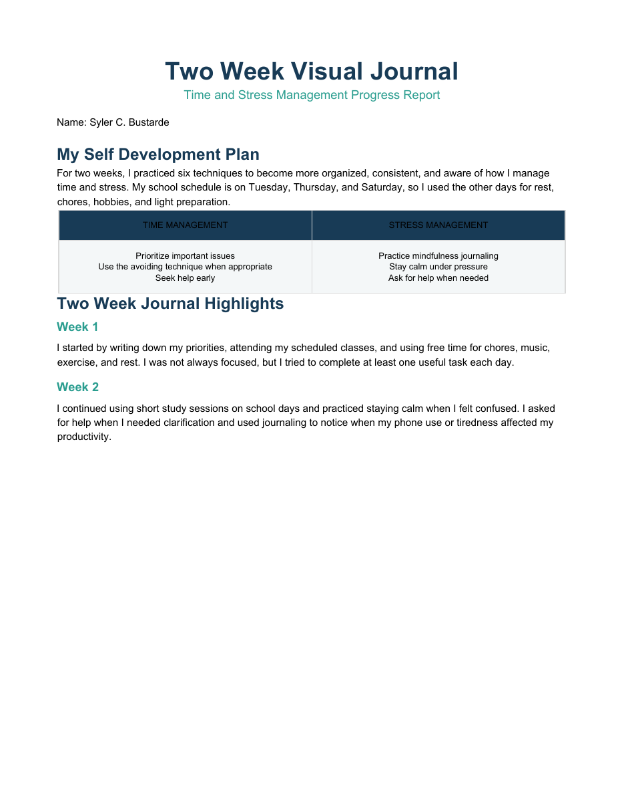
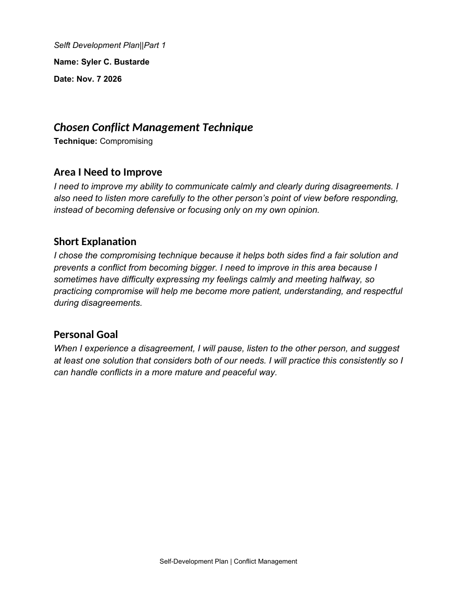
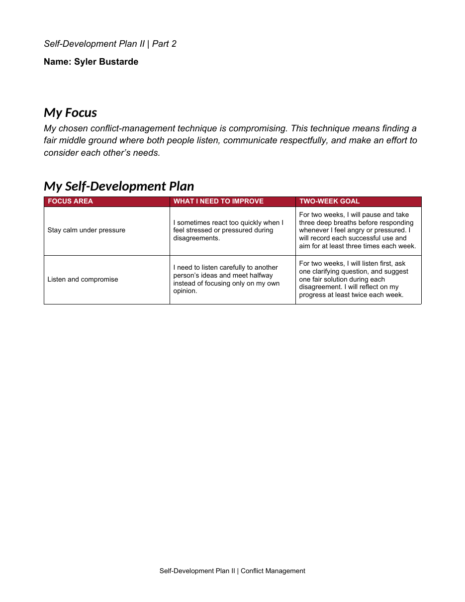
I’m always open to learning, collaborating, and meeting people who value creativity and growth.